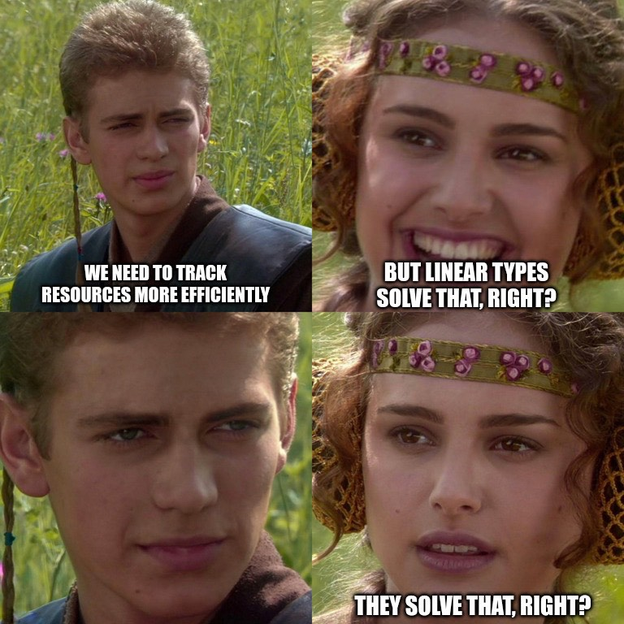

info

I am a PhD student in Computer Science at DCC-FCUP, under the supervision of Mário Florido and Sandra Alves, and a researcher at LIACC.
Overall, my research focuses on providing a foundation for safer computations where resources are carefully managed, through the use of intersection types.
I also work as a teaching assistant at FCUP.
"Your strength has returned, but the weakness still remains."
